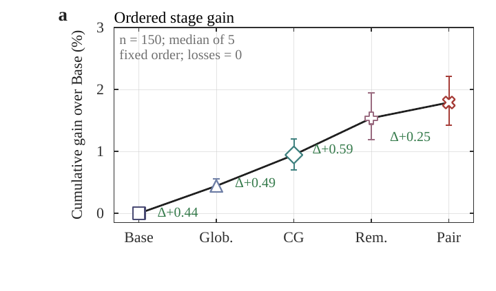
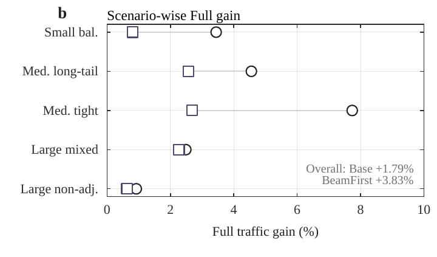
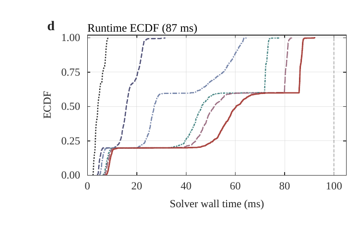
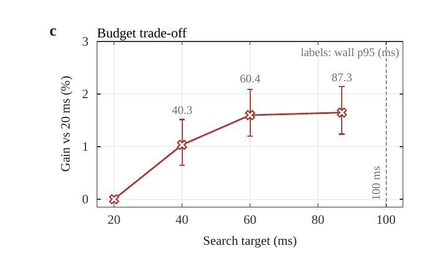
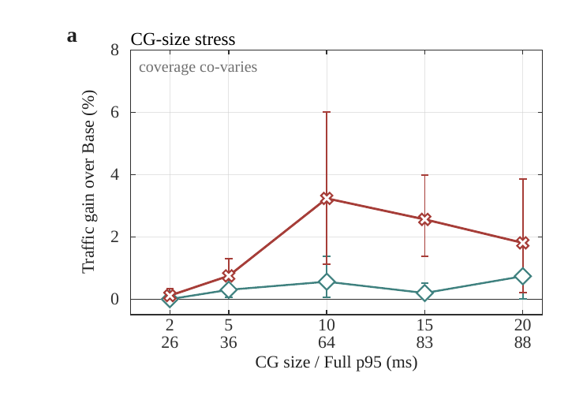
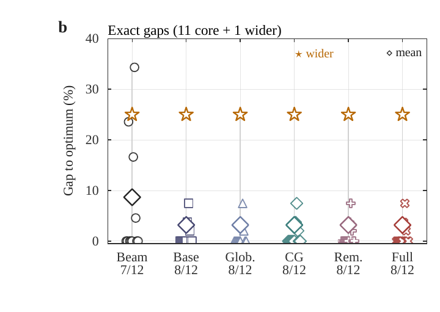

实验结果
五个研究问题分别检验质量、截止时间、兼容组压力、匹配外部基线与精确最优性校准。

RQ1 · 质量增益
累计细化是否真的提升质量？
是。完整配置（Full）相对 BeamFirst 的平均增益为 3.83%（95% CI 3.09–4.67%），胜／平／负（W/T/L）为 127/23/0；相对基础构造（Base）的平均增益为 1.79%。

查看五种场景中的增益

RQ2 · 截止时间
质量提升是否以错过截止时间为代价？
完整配置（Full）的 750 次运行全部通过独立验证，端到端墙钟时间均低于 100 ms。87 ms 是算法内部预算；运行时间中位数／95 分位数（p50／p95）和最坏值采用包含启动与输入输出的外部墙钟口径，因此可以略高于 87 ms，分别为 60.28、87.29 和 92.14 ms。

查看预算扫描

RQ3 · 兼容组压力
兼容组规模增大时，质量与运行时间是否稳定？
CG 2 → 20测试范围
兼容组（CG）压力套件让组大小与覆盖率共同变化。完整配置的优势保持为正，同时报告 95 分位墙钟时间，避免只看质量不看时限。

RQ4 · 外部基线
在匹配预算与计分规则下，外部搜索基线表现如何？
+6.58–8.40%相对六种匹配实现
在统一的 87 ms 内部预算和 100 ms 外部计分规则下，完整配置（Full）相对六种独立搜索实现的平均增益为 6.58%–8.40%。
该比较针对同一仓库内、同预算、同验证规则下的六种独立实现，不代表对所有已发表求解器的普遍排名。
展开六种匹配外部基线的完整结果
这些程序共享输入输出契约、目标和验证过程，但不调用 FPTR 核心代码。结果仅说明本模型、主机和实现族下的匹配比较，不代表对所有已发表求解器的普遍排名。
| 基线 | 完整配置相对增益 | W / T / L | 750 次中的 87 ms 未命中 |
|---|---|---|---|
| ALNS | +7.61% | 134 / 5 / 11 | 74 |
| Tabu | +7.75% | 139 / 4 / 7 | 18 |
| GA | +6.58% | 127 / 2 / 21 | 44 |
| SA | +7.90% | 137 / 4 / 9 | 15 |
| ILS | +8.40% | 137 / 4 / 9 | 41 |
| GRASP | +7.59% | 140 / 2 / 8 | 27 |
RQ5 · 最优性
在可精确求解的小案例上，FPTR 距离最优多远？
完整配置（Full）在 12 个独立动态规划校准案例中有 8 个达到全局最优；最优差距中位数为 0%、均值 3.19%、最大 25%。

适用边界
实验使用合成静态实例、单台未绑核主机和较小精确套件；尚未覆盖动态队列、公平性、移动性、复杂干扰、连续预编码和真实部署轨迹。
展开完整实验协议与计数口径
实验协议
同一输入、同一目标、同一验证器，并对迟到结果计零分。
单线程 C++17 调度器使用 g++ 13.3、-O2，在 Linux 6.8 与 2.30 GHz Xeon E5-2686 v4 上运行。外部墙钟时间覆盖进程启动到输出收集；非零退出、非法输出或超过 100 ms 的运行均计为零效用，Python 验证器独立重算目标值。
实例级统计单位与相对增益
百分比先在每个场景内平均实例级增益，再对五个场景等权汇总，因此不应与总流量均值之比混用。
150 固定实例 · 5 × 30 五种规模与压力场景 · 5 每实例独立重复 · 15,360 内部与外部正式启动总数
Code-only public release公开版本包含代码与经审计的 PNG 图件；性能主张以论文工件和可复核证据为准。